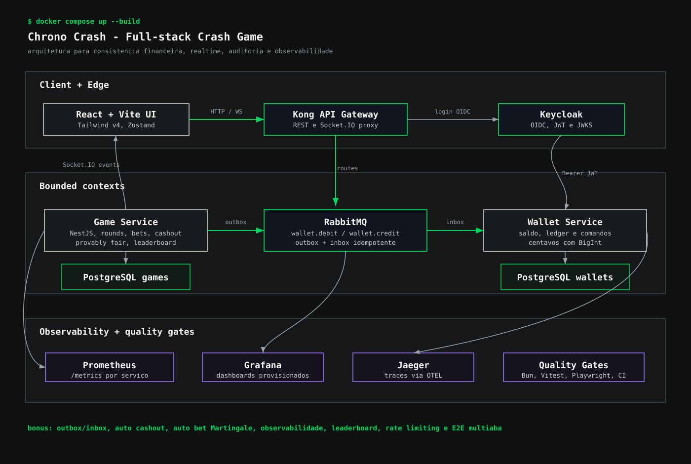

$ open projects/chrono-crash
Full-stack challenge | realtime, money e observability
Chrono Crash entrega um Crash Game auditável com arquitetura de produção.
Desafio full-stack transformado em uma plataforma completa: frontend React/Vite, backend NestJS em dois bounded contexts, RabbitMQ para comandos financeiros, Keycloak como IdP, Kong como gateway, PostgreSQL, Prisma, Socket.IO, Prometheus, Grafana, Jaeger, OpenTelemetry e uma suite robusta de testes automatizados.
$ cat story.md
História
O Chrono Crash nasceu como um desafio full-stack, mas foi tratado como um produto de cassino realtime com requisitos de auditoria. A entrega não se limita ao fluxo apostar, multiplicador, cashout ou crash: o projeto separa responsabilidades entre Game Service e Wallet Service, protege rotas com Keycloak, centraliza entrada via Kong, mantém saldo e ledger em centavos com BigInt, publica eventos de rodada por Socket.IO e expõe métricas e traces para inspeção operacional.
$ cat architecture.svg
Arquitetura

$ grep selling-points
O que torna vendável
Consistência financeira
Game nunca altera saldo diretamente. Débito e crédito passam por RabbitMQ, outbox no Game, inbox no Wallet e comandos idempotentes.
Realtime auditável
Rodadas emitem snapshot, betting started, started, tick, crashed, settled, bet placed e cashed out por Socket.IO.
Operação observável
Prometheus coleta métricas de apostas, cashouts, WebSocket, RTP, auto bet e comandos de wallet; Jaeger recebe traces via OTEL.
Segurança e identidade
Keycloak fornece authorization code flow com PKCE no frontend e JWT validado por JWKS nos serviços NestJS.
Game mechanics reais
Provably fair com serverSeedHash antes da rodada, serverSeed revelado após crash, HMAC SHA-256, auto cashout e auto bet Martingale.
Qualidade verificável
Bun test, Vitest, Playwright, E2E de API, E2E browser, responsividade, Docker healthchecks e quality gate por baseline.
$ cat delivery-report.md
Escopo técnico entregue
runtime + platform
Bun 1.x, Docker Compose, NestJS com TypeScript strict, React/Vite, Tailwind CSS v4, Prisma, PostgreSQL, RabbitMQ, Kong DB-less, Keycloak, Socket.IO, TanStack Query, Zustand, Swagger/OpenAPI, Prometheus, Grafana, Jaeger e OpenTelemetry.
domain + reliability
Dois bancos separados, `games` e `wallets`; money em centavos com BigInt; multiplicadores em basis points; outbox/inbox para idempotência; retries exponenciais em créditos; leaderboard por lucro líquido; auto bet com estratégia fixed e Martingale, stop-loss e take-profit.
quality + evidence
O README registra `bun run ci:local`, `bun run ci:e2e` e `bun run test:e2e:browser` passando na última auditoria local, com 17 testes E2E de API, 7 testes browser, coverage global de 84.58%, duplicação de 1.46% e zero vulnerabilidades high/critical.
$ view code --tabs
Viewer de código
import { createHash, createHmac } from "node:crypto";
export class ProvablyFair {
static hashSeed(seed: string): string {
return createHash("sha256").update(seed).digest("hex");
}
static verifySeed(serverSeed: string, serverSeedHash: string): boolean {
return ProvablyFair.hashSeed(serverSeed) === serverSeedHash;
}
static calculateCrashPointBp(input: CrashPointInput): number {
const digest = createHmac("sha256", input.serverSeed)
.update(`${input.clientSeed}:${input.nonce}`)
.digest("hex");
const sample = BigInt(`0x${digest.slice(0, 13)}`);
const maxSample = 2n ** 52n;
const numerator = maxSample * BigInt(10000 - input.houseEdgeBp);
const denominator = maxSample - sample;
const multiplierBp = Number(numerator / denominator);
return Math.max(10000, multiplierBp);
}
}private async dispatchDebitThroughOutbox(input: {
amountCents: bigint;
betId: string;
playerId: string;
referenceId: string;
roundId: string;
username: string;
}): Promise<{ applied: boolean; balanceCents: bigint }> {
const message = await this.walletOutboxRepository.enqueue({
id: this.idGenerator.generate(),
type: "WALLET_DEBIT",
status: "IN_FLIGHT",
roundId: input.roundId,
betId: input.betId,
playerId: input.playerId,
username: input.username,
amountCents: input.amountCents,
referenceId: input.referenceId,
reason: "BET_PLACED",
});
await this.walletOutboxDispatcher.dispatchMessage(message);
const stored = await this.walletOutboxRepository.findById(message.id);
if (stored?.status !== "SUCCEEDED" || stored.responseBalanceCents === null) {
throw new WalletOperationRejectedError(
stored?.errorCode ?? "WALLET_DEBIT_FAILED",
stored?.errorMessage ?? "Wallet debit failed",
);
}
return {
applied: stored.responseApplied ?? true,
balanceCents: stored.responseBalanceCents,
};
}async process(command: WalletInboxCommand): Promise<WalletInboxResponse> {
return this.prisma.$transaction(async (prisma) => {
const existing = await prisma.walletInboxMessage.findUnique({
where: { referenceId: command.data.referenceId },
});
if (existing?.status === "PROCESSED" || existing?.status === "FAILED") {
return this.toDuplicateResponse(existing);
}
const wallet = await prisma.wallet.findUnique({
where: { playerId: command.data.playerId },
});
if (!wallet) {
const response = {
ok: false,
error: { code: "WALLET_NOT_FOUND", message: "Wallet not found" },
};
await this.persistResponse(prisma, command.data.referenceId, response);
return response;
}
const amountCents = BigInt(command.data.amountCents);
if (command.pattern === "wallet.debit" && wallet.balanceCents < amountCents) {
const response = {
ok: false,
error: { code: "INSUFFICIENT_FUNDS", message: "Insufficient funds" },
};
await this.persistResponse(prisma, command.data.referenceId, response);
return response;
}
const nextBalance =
command.pattern === "wallet.debit"
? wallet.balanceCents - amountCents
: wallet.balanceCents + amountCents;
await prisma.wallet.update({ where: { id: wallet.id }, data: { balanceCents: nextBalance } });
await prisma.walletTransaction.create({ data: { walletId: wallet.id, amountCents, referenceId: command.data.referenceId } });
});
}@WebSocketGateway({
namespace: GAME_REALTIME_NAMESPACE,
cors: { origin: true, credentials: true },
})
export class RoundsGateway implements OnGatewayConnection, RoundEventsPublisher {
@WebSocketServer()
private namespace!: Namespace;
async handleConnection(client: Socket): Promise<void> {
const round = await this.getCurrentRoundUseCase.execute();
client.emit(
ROUND_SNAPSHOT_EVENT,
this.roundRealtimeSerializer.toSnapshotPayload(round),
);
this.recordWebSocketEvent(ROUND_SNAPSHOT_EVENT);
}
async publishTick(round: Round): Promise<void> {
this.emitRoundEvent(ROUND_TICK_EVENT, round);
}
async publishCrashed(round: Round): Promise<void> {
this.emitRoundEvent(ROUND_CRASHED_EVENT, round);
}
async publishBetCashedOut(bet: Bet): Promise<void> {
this.emitBetEvent(BET_CASHED_OUT_EVENT, bet);
}
}@Injectable()
export class KeycloakJwtGuard implements CanActivate {
private readonly issuer =
process.env.KEYCLOAK_ISSUER ?? "http://localhost:8080/realms/crash-game";
private readonly clientId =
process.env.KEYCLOAK_CLIENT_ID ?? "crash-game-client";
private readonly jwksUrl =
process.env.KEYCLOAK_JWKS_URL ??
`${this.issuer}/protocol/openid-connect/certs`;
private readonly jwks = createRemoteJWKSet(new URL(this.jwksUrl));
async canActivate(context: ExecutionContext): Promise<boolean> {
const request = context.switchToHttp().getRequest<RequestWithHeadersAndUser>();
const token = this.extractBearerToken(request.headers.authorization);
if (!token) {
throw new UnauthorizedException("Missing bearer token");
}
const { payload } = await jwtVerify(token, this.jwks, {
issuer: this.issuer,
});
if (payload.azp !== this.clientId) {
throw new UnauthorizedException("Invalid token client");
}
request.user = this.toAuthenticatedUser(payload);
return true;
}
}export class GameMetrics {
private readonly registry = new Registry();
private readonly betsTotal = new Counter({
name: "crash_game_bets_total",
help: "Total crash game bets by status.",
labelNames: ["status"],
registers: [this.registry],
});
private readonly websocketEventsTotal = new Counter({
name: "crash_game_websocket_events_total",
help: "Total crash game WebSocket events by event name.",
labelNames: ["event"],
registers: [this.registry],
});
private readonly crashPointMultiplier = new Histogram({
name: "crash_game_crash_point_multiplier",
help: "Crash game crash point multiplier distribution.",
buckets: [1.01, 1.5, 2, 3, 5, 10, 25, 50, 100],
registers: [this.registry],
});
constructor() {
collectDefaultMetrics({
prefix: "crash_game_process_",
register: this.registry,
});
}
}